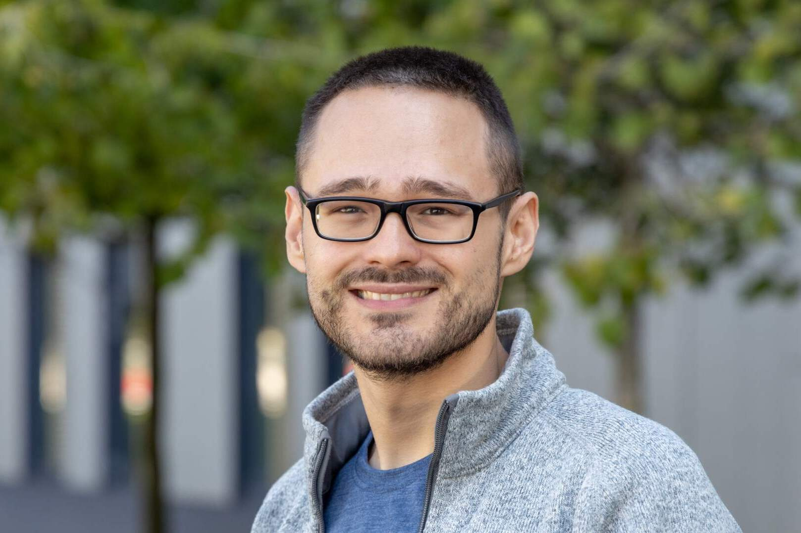

Postdoctoral researcher at the University of Luxembourg
I am a postdoctoral researcher at the Department of Computer Science of the University of Luxembourg, where I am a member of the CLAiM group on Computational Law and Machine Ethics led by Dr. Réka Markovich.
My current research focuses on knowledge representation and automation of reasoning with non-classical and non-monotonic logics, especially with application to the legal context. I am also interested in designing and applying formal techniques to assess and explain the behaviour of non-transparent systems and to check for compliance with regulatory constraints.
Much of my current work centres on LogiKEy, a framework and methodology for logic and knowledge engineering. LogiKEy embeds non-classical logics, such as deontic and epistemic logics, in classical higher-order logic, so that proof assistants like Isabelle/HOL can be used to reason with them, find counter-models, and experiment with ethical and legal theories. With Christoph Benzmüller and colleagues, I have used it to formalise mental privacy, epistemic rights and duties, and multi-agent dialogue protocols, and to teach logic with proof assistants. I also co-taught a course on LogiKEy at ESSLLI 2026.
I completed degrees in Computer Science and Computer Engineering and obtained my PhD in Computer Science (October 2022) from Università degli Studi di Verona, Italy. During the PhD I worked in the fields of knowledge representation and automated reasoning applied to the legal domain, focusing on defeasible deontic logic and its automation. After the PhD and before joining the University of Luxembourg, I had a one-year post-doctoral position at Università degli Studi di Verona, where I also taught as a temporary professor.
Research interests:
Email: name (dot) surname (at) "uni" (dot) "lu"
Department of Computer Science, University of Luxembourg